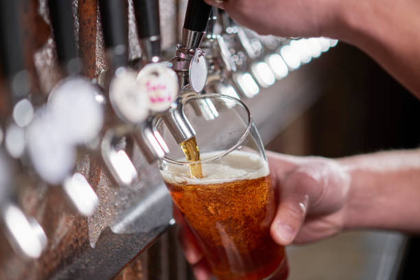

- Proceso artesanal y casero desde el grano hasta el barril -

Elaboramos nuestras cervezas de forma casera, con lotes de 50lts,
donde nuestra labor es crucial durante todo el proceso, ya que su fabricacion es 100% manual.
Cada uno de nuestros productos es unico, porque su elaboración es artesanal, cuyo resultado no depende de ningun proceso automatizado,
sino de nuestro desempeño, controles y evaluación constante durante la fabricacion.
De esta manera, llega a tus reuniones una verdadera cerveza artesanal.

Volver al Inicio